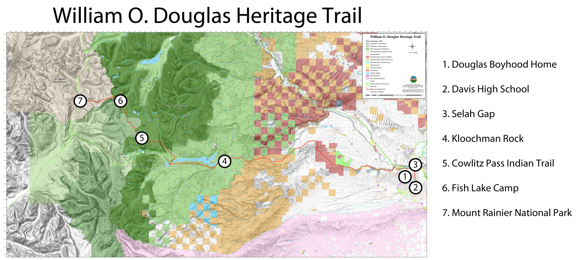

William O. Douglas Trail Map

1. Douglas Boyhood Home, Yakima
William Orville Douglas was born to William and Julia Douglas in Maine, Minnesota in October 1898. The Douglases ventured first to California and then settled in Cleveland, Washington in 1904. After his father's untimely death resulting from complications ofstomach surgery, Douglas's mother moved William and his two siblings to111 North Fifth Avenue in Yakima. During the children's grade school years they were among the poorer families in Yakima. The children began working when they were merely seven years old—washing windows, sweeping stores, and taking any job that was available. Douglas remembers the family as being poor and wrote that, "[it]was the ten cents or fifteen cents that we brought home each evening that often meant the difference between dinner and no dinner."
2. Yakima (Davis) High School, Yakima
William O. Douglas's mother, Julia, pushed her children to excel in school. Douglas later recalled that Yakima High School in 1912 was a joy. Douglas was a straight-A student graduating as valedictorian of his Yakima High School class. His achievements in high school earned him a scholarship to Whitman College in Walla Walla, Washington. Douglas worked in a jewelry store, looked after furnaces, mowed lawns, and swept out small shops; Somehow he still made time to participate on the debate and tennis teams, join a fraternity, and lead Sunday evening services at local area churches. Majoring in English, he graduated second in his class from Whitman College in 1920 at the age of 21.
After graduation from college Douglas returned home to teach Latin and speech at his high school alma mater—now Davis High School in Yakima. There he met Mildred Riddle, a colleague at Yakima High School, who he later married in 1924. Receiving advice and encouragement from a Columbia alumnus he decided to attend Columbia University Law School in New York City., He subsequently taught law at Columbia and Yale for a time in the early 1930's where he became expert in corporate finance. In 1936 President Franklin Roosevelt appointed William O. Douglas to the Securities and Exchange Commission.
In 1939 Roosevelt elevated William O. Douglas to the United States Supreme Court. Justice Douglas, the second youngest person to receive an appointment to the United States Supreme Court, served for 36 years, longer than any other Justice. As his experience on the Court deepened he acquired an increasing tendency to seek out the larger public interest in a wide range of legal areas. He affirmed that First Amendment freedoms occupy a "preferred position" in the constitutional system; and believed that decisions of all governments—federal, state, and local—that intrude on fundamental rights must submit to strict scrutiny. Justice William O. Douglas died on January 19, 1980. He left behind a substantial legacy of judicial opinions and other writings. He wrote over 1200 majority, concurring, and dissenting opinions while serving on the Court—the most ever. He also wrote 32 books, (more than any other justice)—some that were best sellers—delivered countless speeches, and penned many articles in magazines and law reviews.
3. Selah Gap
Justice William O. Douglas developed a love for the mountains and the wilderness early in his life. Douglas was self-conscious about his health and skinny physique and worried that he could not compete physically with other boys his age. A friend suggested that he begin hiking as a way to build his strength and vigor. He noticed the hills and mountains to the west. He started slowly walking the hills closest to Yakima and eventually ventured further into the lower Cascade foothills. One time he walked two miles to Selah Gap to the top of a ridge without slowing his pace. As a youth he frequented places in the south Cascades including Mount Adams, the Goat Rocks, Goose Prairie, and Chinook Pass.
"It is only by foot that one can really come to know the nation," he later wrote in his autobiography.
On many occasions in his life Douglas organized hikes to preserve areas from development or ruin. He lead "marches" and other actions to safeguard wild places on the Olympic Peninsula and Glacier Peak in Washington State, the Buffalo River in Arkansas, the Allagash River in Maine, the Guadalupe Mountains in New Mexico, and the Chesapeake and Ohio (C & O) Canal, that parallels the Potomac River, near Washington, D.C.
4. Kloochman Rock
William O. Douglas experienced an adventure in the Goat Rocks-Tieton River Basin during his early years that had a profound impact on him. In the summer of 1913, he made a memorable climb of Kloochman Rock, a large basalt monolith that lies east of the Rimrock Reservoir near White Pass. This huge massif is a mile long and rises some 2,000 feet above the floor of the basin to a total elevation of 4536 feet. Douglas and his friend Douglas Corpron climbed an untried route, and reached the summit successfully, but not without much fear and trepidation. Though they were underprepared for the climb, they overcame serious danger. Douglas later wrote in Of Men and Mountains about the lessons he learned as a 15-year-old on Kloochman Rock:
When man knows how to live dangerously, he is not afraid to die. When he is not afraid to die, he is, strangely free to live. When he is free to live, he can become bold, courageous, reliant. There are many ways to learn how to live dangerously. . . . . The mountains that traverse this country offer still a different way, and one that for many is the most exciting of all. The mountains can be reached in all seasons. They offer a fighting challenge to heart, soul, and mind, both in summer and winter. If throughout time the youth of the nation accept the challenge the mountains offer, they will help keep alive in our people the spirit of adventure. That spirit is a measure of the vitality of both nations and men. A people who climb the ridges and sleep under the stars in high mountain meadows, who enter the forest and scale the peaks, who explore the glaciers and walk ridges buried deep in snow—these people will give their country some of the indomitable spirit of the mountains. (Douglas, Of Men and Mountains, 1950, 328).
Indian Creek
The confluence of the Indian Creek and Tieton Rivers was a take off point for many of William O. Douglas's early hikes. The Tieton Basin was also an area used by the Yakama Indians for fishing, berry picking, and powwows. The Yakamas still frequented the area to engage in their traditional activities when Douglas was a teenager.
5. Cowlitz Pass Trail
For more than 6,000 years Taidnapam and Yakama Indians traveled back and forth across the Cascade Mountains between Puget Sound and the Yakima Valley to trade blankets, berries, and salmon. The Yakima-Cowlitz Trail followed the Cowlitz River east to a fork where one branch went north to Naches Pass and another to Cowlitz Pass. Other Native American travel routes include a trail between the Cowlitz and Nisqually rivers over Skate Creek; the Cowlitz to Carbonado Trail; and the Klickitat Trail over Cispus Pass.
Grazing dominated the use of the upland forestlands in the White Pass corridor through the early 1900s. In 1914, 15-year old William O. Douglas traveled to Cowlitz Pass to visit sheepherders to share the news of the outbreak of WWI. He wrote "I planned to enter the Cascades through the Naches and the Tieton and go back into the lake country beyond Cowlitz Pass. . . . The papers carried big news—news of war in Europe. So I decided to take recent issues of the Yakima Daily Republic with me." In a meadow near Cowlitz Pass Douglas met a sheepherder who reminded him of Walt Whitman. The sheepherder started supper while Douglas read the news to him aloud. After dinner the man asked Douglas if he could see well enough in the retreating light to read more news to him. When the dishes were done the two built up the fire to increase the light so the sheepherder could hear still more news from the mouth of the future Supreme Court Justice. After a substantial breakfast the next morning Douglas strode down the trail and out of the wilderness home. He reflected years later in Of Men and Mountains, "[t]hat is how I marched out of the Cascades on the last wholly carefree trip I ever had in the high mountains."
6. Fish Lake Camp
The William O. Douglas Wilderness, created in 1984 to honor the man who had been an important figure in the wilderness movement, encompasses many of Douglas's favorite mountains, meadows, and lakes on a high plateau in the south Cascades. The wilderness area includes 166,000 acres on the forested mountain crest between Chinook Pass and White Pass. It includes over sixty hiking trails totaling 250 miles. A portion of the Pacific Crest Trail runs north and south along the 27-mile backbone of the wilderness. The topography includes mountain peaks, pine forests, exposed ridges, and 59 named (and 250 unnamed) lakes and ponds. High mountain lakes such as Twin Sisters, Apple, Snow, Jug, Cougar, Swamp, and Fish flank the region around Tumac Mountain. Many produce the orange-bellied eastern brook trout that run 12-14 inches in length.
7. Mount Rainier National Park, Pacific Crest Trail
William O. Douglas expressed exuberance for Mount Rainier and the Cascades on many occasions. One time early in his life as he tested his legs against the foothills of Yakima, he confronted the majesty of Mount Rainier. "Then came a sudden storm, splattering rain in the lower valley and shooting tongues of lightning along the ridges across from me. As the weather cleared, Adams and Rainier stood forth in power and beauty, monarchs to every peak in their range . . . . They appeared to hold untold mysteries and to contain solitude many times more profound than that of the barren ridge on which I stood. They offered streams and valleys and peaks to explore, snow fields and glaciers to conquer, wild animals to know." Douglas never scaled Mount Rainier but few people spent as much time around the mountain as he did. Douglas frequented Dewey Lakes, Chinook Pass, the American Ridge and the entire area east of Rainier—the wilderness now named for him.
Justice William O. Douglas was destined to test his fate on the parapets of Mount Rainier in the late summer of 1949. After several weeks in Goose Prairie, he was due back to Washington, D.C. for the new term of the United States Supreme Court. He had begun writing Of Men and Mountains, his first book, and wanted additional information from his boyhood haunts to include in the book. He delayed his flight to Washington, D.C. to make one last trip on horseback into the Chinook Pass area before departing for the "other" Washington.
He and Elon Gilbert reconnoitered at Tipsoo Lake, fortuitously met his old friend Willie McGuffie there, and started out on the Pacific Crest Trail toward Sourdough Gap. The two turned their horses to take a steep shortcut toward Crystal Mountain. Gilbert rode ahead of Douglas and was out of earshot when, for some reason, Douglas's horse, Kendall, reared and sent Douglas sliding down its back and over its tail to the ground. Rolling downhill another 30 yards he came to a stop without injury. Douglas wrote in his autobiography that, "I glanced up. Kendall had slipped and fallen too. He rolled over me and I could hear all the bones break in a sickening crescendo." (Douglas, Of Men and Mountains, xiii, 1950) While initial x-rays indicated he had broken 13 ribs, a later radiograph confirmed that he had in fact broken 23—all but one—and punctured a lung! Bruce Allen Murphy wrote in his biography that, "Douglas's life hung in the balance for seventy-two hours. Unable to take any sedatives for fear of an allergic reaction, the Justice had to ride out the excruciating pain in a semiconscious state. In the end, his doctors all agreed, it was due only to his extraordinary physical condition for a man his age and his will to live that Douglas survived an accident that would have killed eight out of ten other people."